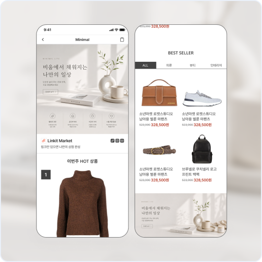
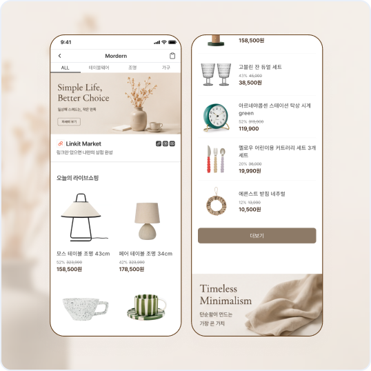
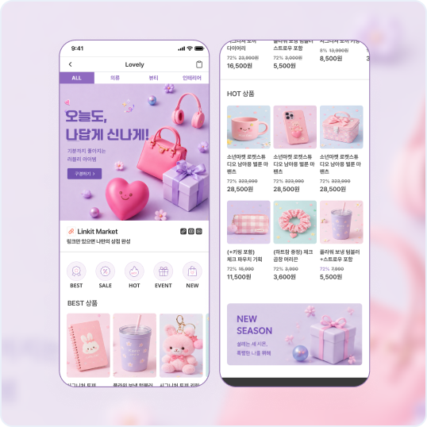
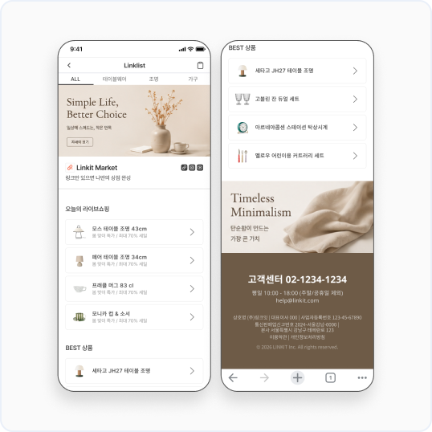

상점 생성
디자인 템플릿 선택
상점의 디자인 템플릿을 선택하세요. *

심플 미니멀/베이직
깔끔하고 단순한 구성의 기본 템플릿으로, 상품을 군더더기 없이 보여주는 베이직 스타일

정돈된 레이아웃의 모던 스타일
상품을 한눈에 정리된 형태로 보여주며, 가로·세로로 균형 있게 배치된 구성이 특징인 템플릿

감성 중심의 러블리 스타일
가로로 넘겨보는 배너와 리스트 구성이 함께 어우러져, 다양한 콘텐츠를 재미있게 탐색할 수 있는 템플릿

링크리스트 레이아웃 스타일(배너X)
불필요한 요소 없이 상품을 링크 형태로 정리해, 원하는 정보를 빠르게 확인하고 이동할 수 있는 템플릿